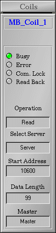
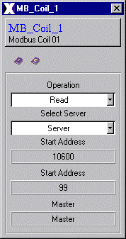
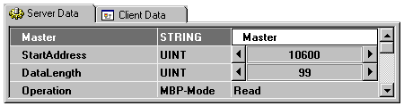
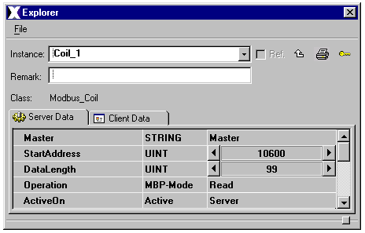

| Modbus_Coil |
Features | Installation | User Interface | Configuration | Implementation Notes
Features
The Modbus_Coil class is used to read and write coils - through the ModbusSA85 Master class - to a Modbus Plus network. It includes the following features:
Features | Installation
| User Interface | Configuration
| Implementation Notes
The Modbus_Coil class is comprised of the following
components (files):
| Class Component | Description | File Name(s) |
| Class Color File | Includes class specific color definitions. | Modbus_Coil.color |
| Class File | Class definition file (generated by automationX); includes graphical representation, user interface, internal control logic, etc. | Modbus_Coil.symbol |
| Graphic Files | Class Specific Graphic Files
for class operation, physical appearance and documentation. |
axclassdoku16.bmp
axinstanzdoku16.bmp ax_icon.bmp ax_iconhelp.bmp axledgreen.bmp axledgreengr.bmp axledred.bmp axledredgr.bmp axledgrey.bmp axledgreygr.bmp iconhelp.gif titlebarback.gif Address.gif DirectoryStruct.gif Master.gif Modbus_Coil.gif |
| HTML Document | HTML document for Online Help | Modbus_Coil.htm |
| Enum File | Enumerator information for selectors | Modbus_Coil.enum |
Installation: The
above listed files must be copied into a common sub-directory within the
project's "classlib" directory. The name of the common directory can be
chosen freely.
Features | Installation
| User Interface | Configuration
| Implementation Notes
The graphical user interface of the Modbus_Coil class consists of
Details are shown in the following figures:
1. Graphical Representation

Figure 1: Graphical Representation
Instance Name
The instance name of a Modbus_Coil object
is displayed at the top of the graphical interface.
Communication Status
Indicators for operational and communication status:
Operation and Server Display
Displays the selected Operation and the
selected Server.
Addressing
Displays the Modbus Plus area - data address and data length - currently being accessed by the class.
Connection to Master Class
Displays the instance name of the ModbusSA85 object
to which the class is currently linked.
2. Operator Popup

Figure 2: Operator Popup
Technical Documentation
The toolbar below the Instance Name provides access
to instance documentation and class documentation. All documents - with
the exception of instance documentation - are included. All documents are
available online - in HTML format - and run in aX's native HTML browser.
Operation and Server Selection
The operation pull down menu allows (online) selection of operation: Read, Write or Async. "Read" designates the class to strictly read all data points from the network, "Write" designates the class to strictly write all data points to the network. "Async" designates Asynchronous Transfer Mode (ATM).
Asynchronous Transfer Mode ATM is used if data values are being set by both automationX and the Modbus. ATM compares data from the Modbus to data in automationX. If any values have been changed by automationX, the driver identifies them and writes only those values back to the Modbus.
The Select Server pull down menu provides a choice of server communication:
Addressing
Displays the Modbus Plus area - data address and data length - currently being accessed by the class.
Connection to Master Class
Displays the instance name of the ModbusSA85 object
to which the class is currently linked.
Features | Installation
| User Interface | Configuration
| Implementation Notes
Hardware
Ensure proper installation of the Modicon SA85 card. Consult technical documentation provided by Modicon for detailed installation instructions.
Modicon Distribution Software
The SA85 device includes a set of software programs required for proper installation. These include devices drivers, setup programs, a library of C functions for Modicon's NetBIOS implementation, a diagnostic utility and sample programs for addressing and data transfers.
automationX Distribution Software
The aX Modbus Plus class set includes driver & application software - two files - located in the "automationX/bin" directory:
ModbusSA85 Master Class
The Modbus_Coils class must be linked to a Master class. Create the link by typing the instance name of the ModbusSA85 Master in the Master variable during configuration (server data list).

Figure 3: Linking to a Master
class
Troubleshooting
Please see Troubleshooting in the
Modbus Plus Overview if problems are encountered.
Features | Installation
| User Interface | Configuration
| Implementation Notes
Declaring an Instance Name
Declare an instance name - in the Instance field - for the Modbus_Coil object.
Declaring a Master
The ModbusSA85 Master must be declared in the Master variable.
Memory Addressing
Transactions to or from Modbus Plus nodes are achieved by declaring a memory address in the StartAddress variable - followed by the number of coils being read or written (DataLength).

Figure 4: Memory Addressing
This example shows a Modbus_Coil object configured to read from memory address 10600 to 10699.
Changing the Memory Address and Master
The memory address, data length and master values exist in two states: Online and Init. The online state is retentive and overrides the init (initial) state. Changing the online state is done through the Explorer window. Note that changing the online state will not change the init state.
The init state is the value that was assigned in the aX-Builder while configuring the class and can only be changed from the aX_builder - i.e. edit the program.
Accessing Data
Data from the Modbus Plus network is stored in the Data variable array. A maximum of 2000 consecutive coils can be accessed per Modbus_Coil class. The coils are accessed through the instance_name.variable declaration. For example:
Coil_1.Data[x]
Where x is the number in the array that
corresponds to the appropriate coil.
Features | Installation | User Interface | Configuration | Implementation Notes